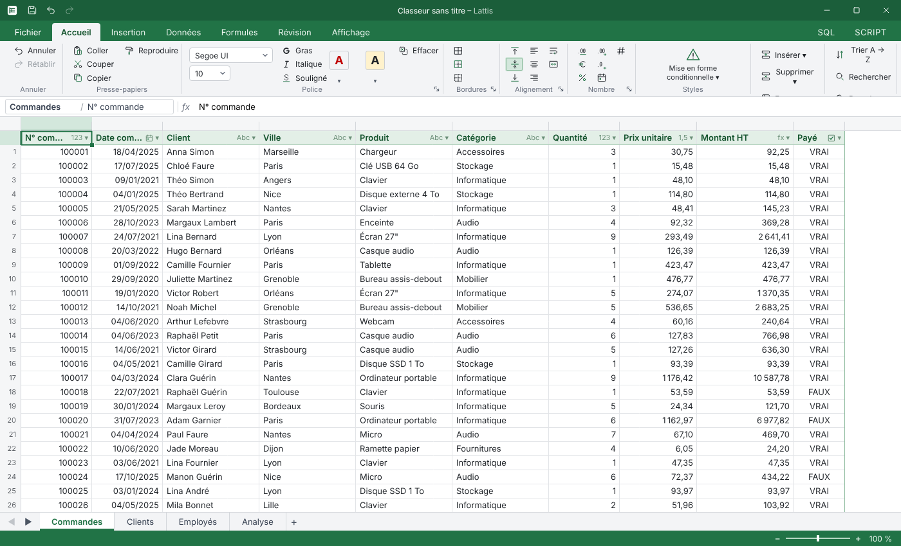
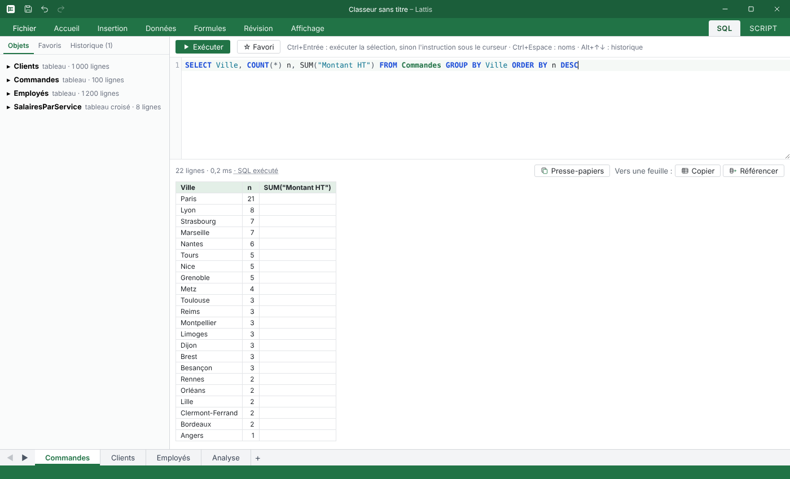
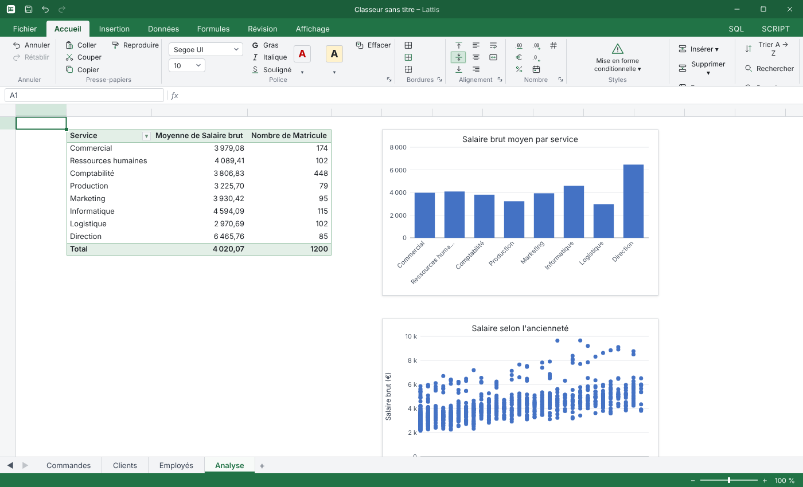

La flexibilidad de una hoja de cálculo.
El rigor de una base de datos.
Lattis es una hoja de cálculo de escritorio moderna y rápida. Escribes como en Excel y guarda tus datos en tablas SQLite reales, en tu propio ordenador. Y sigue siendo gratis, para todo el mundo.
Gratis para Windows, macOS y Linux · Otros sistemas

GROUP BY con un clicCómo funciona
Una hoja de cálculo que entiende tus datos
Sin esquemas que dibujar ni asistentes que seguir. Lattis observa lo que escribes y hace el trabajo de la base de datos por ti.
| Código | Nombre | Ciudad |
| C01 | Martin | Lyon |
| C02 | Dubois | Paris |
| C03 | Bernard | Lyon |
Escribe libremente
Introduce tus datos en cualquier parte del lienzo, como en cualquier hoja de cálculo. Nada bloquea la escritura.
| Código 🔑 | Nombre Abc | Ciudad Abc |
|---|---|---|
| C01 | Martin | Lyon |
| C02 | Dubois | Paris |
| C03 | Bernard | Lyon |
Lattis detecta la tabla
Localiza el bloque de datos, resalta el encabezado, deduce el tipo de cada columna y crea la tabla SQLite correspondiente.
SELECT Ciudad, COUNT(*) FROM Clientes GROUP BY Ciudad;
| Ciudad | n |
|---|---|
| Lyon | 2 |
| Paris | 1 |
Consulta y analiza
Tus tablas son tablas de verdad: SQL, fórmulas, tablas dinámicas y gráficos trabajan directamente sobre el motor.
Demo
Mira Lattis en acción
Vídeos cortos para descubrir lo esencial. Llegarán con las primeras versiones públicas.
Funciones
Todo lo necesario para analizar
Las funciones más usadas de Excel, impulsadas por SQLite.
Lienzo infinito
Varias tablas independientes por hoja, cada una enmarcada por un borde fino. Si una empieza en A1, la pestaña toma su nombre.
Columnas tipadas
Texto, entero, decimal, fecha, booleano. El tipo se detecta mientras escribes, nunca te bloquea y siempre se puede cambiar.
Local-first
Todo cabe en un único archivo .lattis, fácil de enviar o archivar, con recuperación tras un cierre inesperado.
Fórmulas conocidas
Un lenguaje parecido al de Excel, con referencias estructuradas como Clientes[Ciudad]. BUSCARV se convierte en REFERENCE.
Pestaña SQL
Consulta y modifica tus tablas en SQL, con todos los objetos del libro a la vista.
Scripts Lua
Automatiza con db.query() y eventos. Un mecanismo de seguridad detiene los bucles infinitos: la interfaz nunca se congela.
Tablas dinámicas
Agregaciones instantáneas gracias al GROUP BY nativo del motor, presentadas en árbol.
Gráficos y documentos
Gráficos alimentados por tus datos y pestañas Documento para maquetar tus análisis.
Asistente de IA, si lo quieres
Una pestaña Asistente desactivada por defecto, que puedes conectar a tu propia clave o cuenta.

SQL
SQL y cuadrícula, lado a lado
Un GROUP BY en la pestaña SQL y el resultado aparece como una cuadrícula que puedes ordenar, filtrar y reutilizar.

Análisis
Análisis sin esperas
Las tablas dinámicas y los gráficos se apoyan en la agregación nativa de SQLite. Se actualizan en cuanto cambian tus datos.
Lua
Automatizar con Lua
Una API sencilla y segura para trabajar con tus tablas en segundo plano, con referencia integrada y avisos mientras escribes.
for row in db.rows("SELECT _id, Prix FROM Produits") do
db.update("Produits", row._id, { Prix = row.Prix * 1.03 })
endConexiones
Conectado a tus bases de datos
Importa y actualiza datos externos, al estilo de Power Query. Las contraseñas se quedan en el llavero de tu ordenador.
Bases relacionales
PostgreSQL, MySQL y MariaDB, SQL Server, SQLite.
API y archivos
API REST en JSON, archivos Parquet y JSON.
Trabajo en equipo (en estudio)
Un «Servidor Lattis» sobre PostgreSQL, con roles y permisos. Esta función está en diseño y todavía no está disponible.
Precio
Gratis. Para todo el mundo.
Sin versión Pro, sin suscripción, sin límite de filas. Lattis es gratis tanto para particulares como para empresas, y seguirá siéndolo.
Lattis
0 €
para siempre
- Todas las funciones, sin versión recortada
- Uso personal y profesional
- Sin necesidad de crear una cuenta
- Tus datos se quedan en tu equipo
- Actualizaciones incluidas
Entonces, ¿quién financia Lattis?
El programa es gratis para todos porque quienes más valor obtienen de él contribuyen de otras formas.
Donaciones de empresas
Las empresas que usan Lattis a diario pueden apoyar su desarrollo con una donación.
Alianzas y patrocinadores
Los socios financian funciones concretas o respaldan la hoja de ruta, con total transparencia.
Formación
Cursos para dominar Lattis, SQL o la automatización con Lua, en equipo o de forma individual.
Acompañamiento a empresas
Ayuda con el despliegue, la migración desde Excel, la conexión a tus bases de datos y scripts a medida.
Descarga
Instala Lattis
El botón elige automáticamente el instalador adecuado para tu sistema a partir de la última versión publicada.
Buscando la última versión…
Windows
Instalador MSIX
macOS
Imagen de disco DMG
Linux
AppImage, paquetes .deb y .rpm
Preguntas frecuentes
¿Lattis es realmente gratis?
Sí. Todas las funciones son gratuitas, para uso personal y profesional, sin suscripción ni versión Pro. El proyecto se financia con donaciones de empresas, alianzas, formación y acompañamiento.
¿Dónde se guardan mis datos?
En tu ordenador. Un libro es un archivo .lattis que contiene una base SQLite. Nada se envía a un servidor, salvo que tú conectes una base externa.
¿Conservo mis hábitos de Excel?
Sí: cinta de opciones, menús contextuales, atajos, deshacer y rehacer, fórmulas conocidas. BUSCARV incluso se convierte automáticamente en REFERENCE.
¿En qué sistemas funciona Lattis?
Windows, macOS y Linux. Es una aplicación nativa hecha en Go con Wails y SvelteKit, sin el peso de Electron.
¿Cuándo puedo probarlo?
En cuanto se publique una versión, el botón Descargar obtendrá automáticamente la más reciente para tu sistema. Todas las versiones están también en GitHub.
¿Puede ayudar mi empresa?
Con gusto: con una donación, una alianza, formación para tus equipos o un acompañamiento a medida. Escríbenos a contact@lattis.be.
¿Listo para dar rigor a tus hojas de cálculo?
Sigue el proyecto y sé de los primeros en probar Lattis.